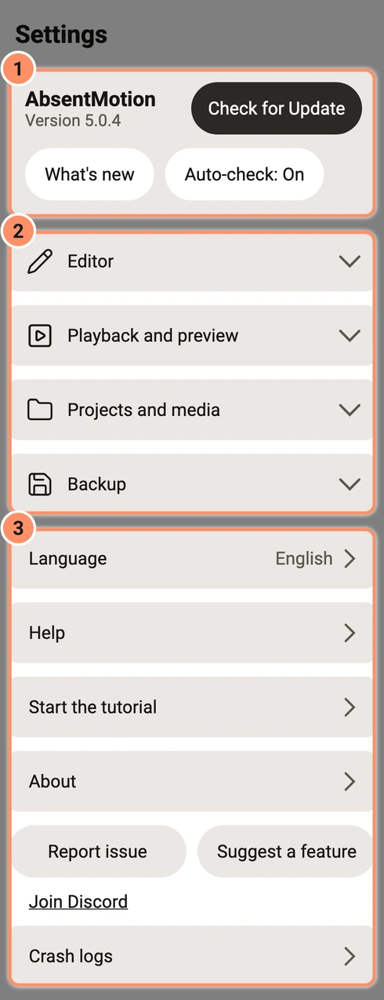
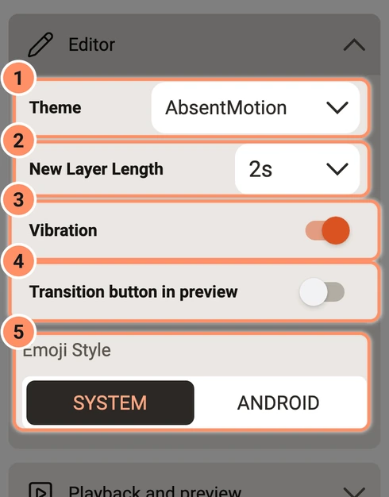

Einstellungen
Jede Einstellung im Menü auf dem Startbildschirm, mit ihrem Standardwert.
Auf dieser Seite
Tippe oben links auf dem Startbildschirm auf die Menüschaltfläche, um das Einstellungsmenü zu öffnen. Es hat vier Gruppen, die geschlossen starten (tippe auf eine Gruppe, um sie zu öffnen), und darunter ein paar weitere Zeilen.

Editor
- Design. AbsentMotion (der Standard: ein dunkler Editor und ein warmer, heller Startbildschirm), Tageslicht (überall hell) oder Benutzerdefiniert. Designdatei importieren... lädt ein Design aus einer kleinen Datei (siehe unten).
- Neue Ebenenlänge. Wie lange neue Ebenen dauern: 1 bis 10, 15, 20, 25, 30, 45 oder 60 Sekunden. Der Standard ist 2.
- Vibration. Kurze Vibrationen auf der Zeitleiste beim Einrasten, bei langen Berührungen und beim Umordnen. Standardmäßig an.
- Übergangsschaltfläche in der Vorschau. Standardmäßig aus. Die runde Schaltfläche, die einen Übergang hinzufügt, sitzt normalerweise unten rechts im Zeitleistenbereich. Schalte dies ein, damit sie stattdessen unten links in der Vorschau liegt. Siehe Übergänge und Animationen.
- Emoji-Stil. SYSTEM (die Emojis deines Telefons, der Standard) oder ANDROID (die Emoji-Schrift, die mit der App kommt und auf jedem Telefon gleich aussieht).

Eigene Designs
Eine Designdatei ist eine kleine Textdatei im JSON-Format mit höchstens 64 KB. Sie hat einen optionalen name und alle Farben, die du ändern willst, geschrieben als #RRGGBB oder #AARRGGBB. Farben, die du weglässt, behalten das AbsentMotion-Aussehen. Zum Beispiel:
{"name": "Mint", "Accent": "#5BD6A4", "HomeAccent": "#1B7A4A"}Die Farbnamen sind die Farben des Editors und des Startbildschirms: TopBar, PreviewBg, TimelineBg, Panel, PanelInset, Button, Field, FieldHi, Chosen, Well, Deepest, Line, MenuLine, KeyDigit, KeySymbol, Scrim, PressEditor, OnDark, OnDarkDim, Caption, Faint, Inactive, OnScrim, Accent, AccentLit, AccentGlow, AccentDeep, OnAccent, Cool, CoolDeep, Gold, Warning, Bookmark, LayerBar, LayerBarStripe, TextBar, TextBarStripe, AudioBar, AudioWave, OnBar, OnAudioBar, HomeBg, Card, SheetBg, Navy, HomeAccent, OnNavy, OnNavyAccent, NavyHi, NavyLine, HomeInk, HomeMid, HomeDim, HomeFaint, HomeLine, HomePanel, HomeDrawer, SwitchOff, Thumb, MenuScrim und PressHome. Es wird immer nur ein eigenes Design gespeichert. Wenn du eine neue Datei importierst, ersetzt sie das alte und wird sofort angewendet.
Wiedergabe und Vorschau
- Vorschauqualität. FULL, HALF oder QUARTER (Standard: FULL): wie scharf die Vorschau im Editor ist. Niedriger ist auf einem langsamen Telefon schneller und ändert die Exporte nicht. Derselbe Schalter befindet sich in der Vorschauleiste des Editors.
- Grafik. AUTOMATIC oder OPENGL (Standard: AUTOMATIC): wie die App Vorschau und Export zeichnet. AUTOMATIC verwendet Vulkan und wechselt zu OpenGL, wenn Vulkan nicht starten kann. Wenn die App sich beim Starten der Grafik von selbst schließt, verwendet der nächste Start die andere. Wähle OPENGL, wenn Vorschau oder Exporte auf diesem Telefon falsch aussehen. Die Zeile unter dem Schalter zeigt, welche Option gerade verwendet wird. Mit OpenGL fehlen einige KI-Werkzeuge; siehe Anforderungen und Versionen.
- Wiedergabe-Resampling. LOW, HIGH oder ULTRA (Standard: ULTRA): die Qualität der Tonneuabtastung, wenn der Editor abspielt und wenn der Ton für einen Export gemischt wird.
- Vorschaukopien großer Videos verwenden. Standardmäßig an. Bei Videos, die größer als 1920 x 1080 sind oder wenige Keyframes haben, erstellt die App im Hintergrund eine kleine, leichte Kopie und verwendet sie für die Vorschau. Exporte verwenden immer die Originaldatei. Die Kopien werden in einem Cache mit bis zu 2 GB aufbewahrt.
- Vorschaukopien löschen entfernt sie. Die Zeile zeigt den belegten Speicherplatz.
- Vorschau im Leerlauf vorrendern. Standardmäßig an. Wenn du kurz pausierst, rendert die App die Bilder rund um den Abspielkopf im Hintergrund, bis der dafür reservierte Speicher voll ist. Eine dünne grüne Linie am unteren Rand des Zeitlineals markiert die fertigen Bilder, und sie laufen flüssig. Eine Änderung verwirft nur die Bilder, die sie betrifft. Schalte es aus, um Akku oder Speicher zu sparen.
Projekte und Medien
- Importkarte in der Projektliste anzeigen. Standardmäßig aus. Fügt oben in der Projektliste eine Karte mit Datei auswählen hinzu.
- Kopie importierter Medien im Projekt behalten. Standardmäßig an. Das Foto, Video oder Audio, das du hinzufügst, wird im Projekt kopiert, sodass es weiter funktioniert, wenn das Original verschoben oder gelöscht wird. Schalte es aus, um Speicherplatz zu sparen, wenn du deine Dateien nie verschiebst.
- Ausschnitt-Qualität. Standard oder AI-Hintergrundentfernung 2.0: die Art des Ausschnitts, den du beim Entfernen des Hintergrunds eines Fotos erhältst. Siehe KI-Werkzeuge.
- Untertitelmodell entfernen. Wird nur angezeigt, nachdem das Spracherkennungsmodell für Untertitel heruntergeladen wurde. Die Zeile zeigt die Größe der Datei und löscht sie; die App lädt sie erneut herunter, wenn du später Untertitel verwendest.
- AI ... Modell löschen. Eine Zeile für jedes heruntergeladene AI-Verbesserungs- oder AI-Glättungsmodell, mit seiner Größe. Tippst du sie an, wird das Modell gelöscht; die App lädt es beim nächsten Bedarf erneut herunter.
- Video-Downloader-Zusatzpaket löschen. Wird nur angezeigt, nachdem das Zusatzpaket heruntergeladen wurde. Die Zeile zeigt den Speicherplatz, den das Zusatzpaket belegt, und entfernt es. Der Video-Downloader fragt es beim nächsten Mal erneut an. Siehe Der Startbildschirm.
- Grafikchip für AI verwenden. Standardmäßig nur bei neueren Grafikchips an, von denen bekannt ist, dass sie für AI-Glättung und AI-Verbesserung sicher sind. Auf anderen Telefonen laufen diese auf dem Prozessor. Wenn du es für einen anderen Chip einschaltest, wird vorher nachgefragt, weil es bei manchen Telefonen zum Einfrieren führen kann. Siehe KI-Werkzeuge.
Sicherung
- Alle Projekte sichern, Aus Sicherung wiederherstellen und Wöchentliche automatische Sicherung (nur Projekte) (standardmäßig aus). Siehe Projekte, Sicherung und Import.
Sprache
Die Zeile Sprache zeigt die aktuelle Sprache und öffnet die Liste der 25 Sprachen: Englisch, Indonesisch, Hindi, Portugiesisch (Brasilien), Spanisch (Lateinamerika), Spanisch (Spanien), Filipino, Vietnamesisch, Thai, Malaiisch, Arabisch, Persisch, Urdu, Türkisch, Russisch, Bengalisch, Japanisch, Koreanisch, Chinesisch (traditionell), Chinesisch (vereinfacht), Französisch, Deutsch, Italienisch, Polnisch und Ukrainisch. Wählst du eine aus, wird sie sofort übernommen.
Über, Hilfe und weitere Zeilen
- Hilfe öffnet diese Anleitung in der App, ohne Verbindung.
- Tutorial starten startet eine Tour von 5 Minuten. Du erstellst in einem Übungsprojekt eine kurze Animation, sodass deine eigenen Projekte unberührt bleiben. Wenn du die Tour auf halbem Weg verlässt, wird die Zeile zu Tutorial fortsetzen, und eine zweite Zeile, Tutorial neu starten, erscheint. Der Startbildschirm bietet die Tour ebenfalls an, bis du Nicht erneut fragen wählst.
- Über zeigt die Version, die Lizenz (GNU General Public License v3.0), einen Hinweis, dass AbsentMotion ein unabhängiges Projekt ist, Open-Source-Lizenzen (den vollständigen Lizenztext jeder Bibliothek, die die App verwendet) und zwei Links, die im Webbrowser öffnen: Projektstartseite (das GitHub-Repository) und Website und Anleitung (die AbsentMotion-Website mit dieser Anleitung).
- Problem melden (der unterstrichene Link unter Über) öffnet das Formular für Fehlerberichte im Webbrowser.
- Absturzprotokolle listet die Abstürze auf, die die App aufgezeichnet hat. Tippe auf einen, um ihn zu lesen, und nutze Kopieren, um ihn zu kopieren, zum Beispiel um ihn mit einem Fehlerbericht zu senden. Siehe Fehlerbehebung.
- Bei jedem Öffnen der App nach einer neuen Version suchen. Die App fragt dich einmal, ob sie das tun darf. Ist es an, stellt sie beim Öffnen eine Anfrage an GitHub nach der neuesten Versionsnummer. Sonst sendet sie nichts, und sie lädt oder installiert nie selbst etwas.
- Nach Update suchen führt dieselbe Prüfung einmal sofort aus. Wenn eine neuere Version existiert, zeigt der Dialog ihre Version und die Download-Größe. Änderungsprotokoll öffnet die Versionshinweise, und Update herunterladen lädt die passende App-Datei in der App herunter (Aktuelle oder Kompatible Version, und auf Chromebooks mit diesen Chips die Intel- oder AMD-Datei), mit einem Fortschrittsbalken und Abbrechen. Bevor etwas heruntergeladen wird, fragt die App dich, Aus dieser Quelle zulassen für AbsentMotion einzuschalten, falls Android dies noch nicht erlaubt. Die App prüft die Datei anhand der Prüfsumme und des Signierschlüssels der Version. Danach bittet Android dich, die Installation zu bestätigen. Wenn die passende Datei nicht gefunden wird, öffnet Herunterladen die Releases-Seite. Auf einem Samsung-Telefon kann Auto Blocker die Installation stoppen: siehe Fehlerbehebung.